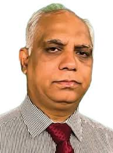

MBBS, MS (Urology), FACS (USA)
Urologist, Andrologist & Laparoscopic Surgeon
(Kidney, Ureter, Bladder, Kidney Tumor, Stone Surgery, Prostate Gland Diseases)
Associate Professor (Urology)
Holy Family Red Crescent Medical College & Hospital
Urology & Kidney Hospital Ltd
Address: Unit 02, House # 02, Block # A, Section # 10, Mirpur, Dhaka
Visisting Hours: 7pm to 9pm (Sat, Mon & Wed)
Appointment: +8809666787807
Prescription Point, Banani
Address: House – 105, Road – 12, Block – E, Banani, Dhaka
Visisting Hours: 4pm to 6pm (Sat, Mon & Wed)
Appointment: +8801713333233
Asso. Prof. Dr. Ahmed Sharif is a renowned Urologist, Andrologist, and Laparoscopic Surgeon in Dhaka, holding an MBBS, MS in Urology, and FACS (USA). He currently serves as an Associate Professor in the Department of Urology at Holy Family Red Crescent Medical College & Hospital. Dr. Sharif is highly experienced in the management of kidney, ureter, bladder, prostate, and male reproductive system diseases, offering expert care for conditions such as kidney stones, urinary tract infections, prostate gland enlargement, kidney tumors, male infertility, erectile dysfunction, and minimally invasive laparoscopic surgeries. He consults patients at Popular Diagnostic Center, Mirpur from 7pm to 9pm on Saturday, Monday, and Wednesday, and at Prescription Point, Banani from 4pm to 6pm on the same days.
MBBS, BCS (Health), MS (Urology)
Kidney, Ureter, Bladder, Prostate, Male Genitalia, Male Infertility, Sexual Disease Specialist
Endoscopic & Laparoscopic Surgeon
Assistant Professor, Urology
National Institute of Kidney Diseases & Urology
Labaid Diagnostic, Gulshan
Address: House # 13/A, Road # 35, Gulshan 2, Dhaka
Visisting Hours: 5pm to 7pm (Sat, Mon & Tue)
Appointment: +8801766662525
DKMC Hospital, Narayanganj
Address: Bhai Bhai Complex, Bhulta, Rupganj, Narayanganj
Visisting Hours: 4pm to 7pm (Sun, Wed & Thu)
Appointment: +8801971600112
Dr. Shahriar Md. Kabir Hasan is a Urologist in Dhaka. His qualification is MBBS, BCS (Health), MS (Urology). He is a Assistant Professor, Urology at National Institute of Kidney Diseases & Urology. He regularly provides treatment to his patients at Labaid Diagnostic, Gulshan. Practicing hour of Dr. Shahriar Md. Kabir Hasan at Labaid Diagnostic, Gulshan is 5pm to 7pm (Sat, Mon & Tue).

MBBS (Dhaka), MS (Urology), FACS (USA)
Urology Specialist & Surgeon
(Kidney, Ureter, Bladder, Prostate, Male Sexual Organs, Adrenal Gland)
Associate Professor (Urology)
Bangabandhu Sheikh Mujib Medical University Hospital
Module General Hospital
Address: 1/G/3, Paribagh (Beside Masjid), Hatirpul, Dhaka
Visisting Hours: 4pm to 9pm (Closed: Friday)
Appointment: +8801971370516
Dr. Md. Faruk Hossain Munshi is a highly qualified Urology Specialist and Surgeon in Dhaka, holding an MBBS from Dhaka, MS in Urology, and FACS (USA). He is currently serving as an Associate Professor in the Department of Urology at Bangabandhu Sheikh Mujib Medical University Hospital. Dr. Munshi specializes in diagnosing and treating diseases related to the kidneys, ureters, bladder, prostate, male sexual organs, and adrenal glands, including kidney stones, prostate enlargement, urinary tract infections, male infertility, erectile dysfunction, and adrenal tumors. He provides consultations at Module General Hospital, Dhaka, with visiting hours from 4pm to 9pm (Closed: Friday).